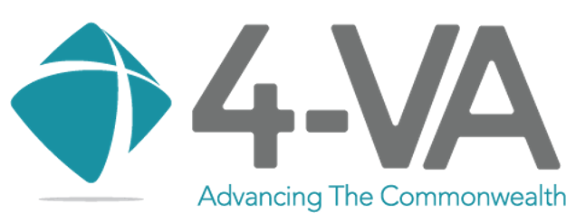

Ferdinando (Nando) Fioretto
Assistant Professor of Computer Science, University of Virginia

307 Rice Hall
85 Engineer's Way
Charlottesville, VA 22904
I am an assistant professor of Computer Science at the University of Virginia.
I lead the Responsible AI for Science and Engineering (RAISE) group where we make advances in artificial intelligence with focus on two key themes:
Foundation Models for Science and Engineering: We develop the foundations to blend predictive and generative models and neuro-symbolic reasoning for complex scientific and engineering problems.
Responsible AI: We analyze the assurance of AI systems in support of decision-making and learning tasks, focusing especially on privacy, safety, and fairness.
My research has been generously supported by various projects from the National Science Foundation, a Google Faculty Research Award, an Amazon Research Award, a Cohere For AI Research Grant Program, a NVIDIA Academic Grant Program Award, the LaCross Institute, and the University of Virginia.
For more details, please see my papers and short bio
Opportunities for Undergaduates Students
I regularly accept undergaduates and graduates interns who are willing to work on Responsible AI or Differentiable Optimization topics. See this page for current projects available.
If you are interested in working with us, send me your CV and interests and make sure you check our latest work!
Research sponsors
Our group is grateful for the generous support from our sponsors:|  |
Recent News
36 total-
Dec 2025
Award- Our work Constrained Molecular Generation with Discrete Diffusion was awarded the Best Student Paper Award at the NeurIPS AI4D3 Workshop! Congrats to Jacob and Michael!

- I gave a talk at the NeurIPS COML Workshop on Generative AI for Scientific and Engineering Research.
-
Nov 2025
Publication- Our work Discrete-Guided Diffusion for Scalable and Safe Multi-Robot Motion Planning was accepted at AAAI 2026! Congrats to Jinhao!
- Check out our new work on accelerating LLM inference with discrete diffusion models! These results are amazing!
- I gave a talk at the ORNL AI Core workshop on Generative AI for Science.
-
Oct 2025
Publication- Check out our new work on manifold constrained protein design with diffusion models!.
- Several new preprints on topics spanning from physics-constrained generative flow matching and diffusion models to safety in agentic AI systems and learning to solve PDE-constrained problems.
Check out our publications’ page for details.
-
Sep 2025
Publication- Two papers on physics-constrained generative diffusion models (as Spotlight) and logic-constrained language diffusion models accepted at NeurIPS 2025
Congratulations to Jacob, Michael, and Stefano!
- Our book Differential Privacy in Artificial Intelligence: From Theory to Practice is now online, available as Open Access!
This book covers the (i) theoretical underpinnings of Differential Privacy, (ii) recent algorithmic advances for machine learning,, (iii) practical applications across key engineering and scientific domains, (iv) methodologies for implementation and empirical evaluation, and (v) the surrounding legal and ethical frameworks.
The book is also available on Amazon and Barnes & Noble. -
Aug 2025
Publication- New preprint: Discrete-Guided Diffusion for Scalable and Safe Multi-Robot Motion Planning. We provide a new integration of discrete optimization and diffusion models for multi-robot motion planning scaling to 100 of agents in cluttered enviroments.

- New preprint: Stability-Constrained AC Optimal Power Flow–A Gaussian Process-Based Approach. We propose a new, scalable approach to incorporate generator dynamics into the ACOPF using Gaussian Process (GP) models. Crucially, this enables probabilistic stability assessment to be integrated directly into the optimization process!
- NSF-RI proposal on Generative Models for Scientific Exploration funded! We’ll integrate optimization and physical principles dirctly in generative models for a variety of scientific applications! Thank you, NSF!
- Paper Privacy-Preserving Convex Optimization: When Differential Privacy Meets Stochastic Programming accepted at CDC-2025!
- New preprint: SoK: Data Minimization in Machine Learning. We provide introduces a comprehensive framework for data minimization in machine learning and introduce a systematical review the literature on data minimization and adjacent methodologies.
-
Jul 2025
Award- Congratulations to Michael Cardei for winning an NSF GRFP Scholarship Award!
- I gave a talk at USNCCM18 about our generative AI for material discovery. -
Jun 2025
Publication- New preprint: Disclosure Audits for LLM Agents. We provide a model to audit disclosure risks for LLM agentic systems with conversational interfaces.
- Our paper on Neuro-symbolic Generative Diffusion was awarded a DARPA Disruptive Idea Award! Thank you, DARPA for the support!
- We received two 4-VA research grants! We will work with George Mason and Virginia Tech to build more aligned and interpretable LLM models and more robust learning to optimize pipelines. Thank you 4-VA for your support! -
May 2025
Publication- Grateful to receive research credits from Google Cloud! We will develop more secure agentic LLM systems . Thank you, Google!
- Multi-Agent Path Finding in Continuous Spaces with Projected Diffusion Models was accepted at ICML 2025. Congraulations to Jinhao and Jacob!
- Neuro-symbolic Generative Diffusion Models for Physically Grounded, Robust, and Safe Generation was accepted at Neu 2025.
Congratulations to Jacob, Michael, and Jinhao!
- Congratulations to Joon Ko, who was awarded an Excellence in Research Award for undergraduate research at UVA CS! -
Apr 2025
Publication- Speculative Diffusion Decoding: Accelerating Language Generation through Diffusion was selected for an Oral presentation to NAACL 2025. Congraulations to Jacob and Michael!
- Our paper The Data Minimization Principle in Machine Learning was accepted at FAccT 2025. Congratulations to Prakhar!
- Congratulations to Michael Cardei, who was awarded an NSF GRFP Honorable Mentions! -
Mar 2025
Award- Greatful to receive an NVIDIA Academic Grant Program Award! We will develop faster LLM inference. Thank you, NVIDIA!
- Excited to share our lab’s new work: Constrained Language Generation with Discrete Diffusion Models!
- Our paper Low-rank finetuning for LLMs: A fairness perspective was awarded a Best paper award at the AAAI 2025 colorai workshop.
-
Feb 2025
Award- Learning To Solve Differential Equation Constrained Optimization Problems was awarded a Spotlight at ICLR 2025. Congraulations to Vincenzo!
- Grateful to be awarded the 2025 Fellowship in AI Research from the LaCross Institute for Ethical AI in Business. This fellowship will sponsor a project at the intersection of privacy, fairness, and optimization.
- Honored to receive an Outstanding Research Faculty Recongition from the University of Virginia. -
Jan 2025
Publication- Our work on Learning To Solve Differential Equation Constrained Optimization Problems was accepted to ICLR 2025. Congraulations to Vincenzo!
- Our work on Speculative Diffusion Decoding: Accelerating Language Generation through Diffusion was accepted to NAACL 2025. Congraulations to Jacob and Michael!
- Our work on Differentially Private Data Release on Graphs: Inefficiencies and Unfairness was accepted to AISTATS 2025! With Sen and Juba.
- Our work on Fairness Issues and Mitigations in (Differentially Private) Socio-demographic Data Processes was awarded an oral at AAAI 2025! Congratulations to Joon!